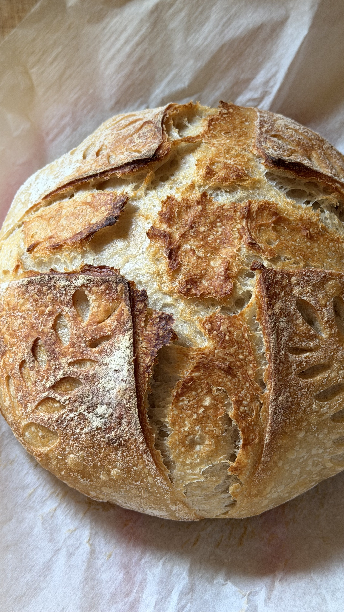

Sourdough bread

Easy overnight sourdough bread!
Ingredients
- 100g active sourdough starter
- 400g water
- 500g bread flour
- 11g salt
Instructions
- In a large bowl, mix together the starter and water until mostly combined.
- Add the bread flour and salt. Mix until no dry flour remains.
- Let the dough rest for 30 minutes.
- Perform one round of stretch and folds. Cover and let rest for 30 minutes. Repeat this process every 30 minutes for a total of 3 rounds.
- Cover the dough and let it bulk ferment for about 8 hours, or until it has risen noticeably and looks light and airy.
- Turn the dough onto a lightly floured surface and shape into a tight loaf.
- Place the dough seam-side up in a floured proofing basket or bowl lined with a floured towel.
- Cover and refrigerate overnight.
- The next morning, place your Dutch oven in the oven and preheat to 450°F (232°C).
- Turn the dough onto parchment paper, score the top, and carefully transfer it to the hot Dutch oven.
- Bake for 4 mins covered at 450°F. Then reduce the oven to 435°F (224°C) and bake 20 minutes covered. Lastly,remove the lid and bake 8–10 minutes more, or until deep golden brown.
- Cool completely on a wire rack before slicing!
Notes
- Bulk fermentation time will vary depending on the temperature of your kitchen. Look for dough that has risen, feels airy, and jiggles slightly when the bowl is gently shaken.
- For best results, use an active starter that has doubled in size before mixing your dough.
Home